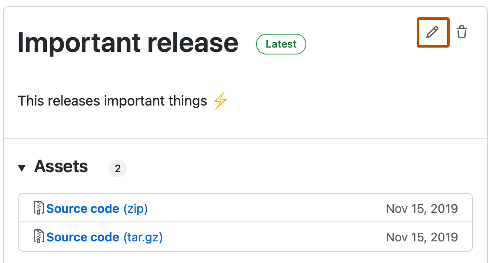

You can publish actions in GitHub Marketplace and share actions you've created with the GitHub community.
Prerequisites
Note
You must accept the terms of service to publish actions in GitHub Marketplace.
Before you can publish an action, you'll need to create an action in your repository. For more information, see Reusing automations.
When you plan to publish your action to GitHub Marketplace, you'll need to ensure that the repository only includes the metadata file, code, and files necessary for the action. Creating a single repository for the action allows you to tag, release, and package the code in a single unit. GitHub also uses the action's metadata on your GitHub Marketplace page.
Actions are published to GitHub Marketplace immediately and aren't reviewed by GitHub as long as they meet these requirements:
The action must be in a public repository.
Each repository must contain a single action metadata file (action.yml or action.yaml) at the root.
Repositories may include other actions metadata files in sub-folders, but they will not be automatically listed in the marketplace.
The name in the action's metadata file must be unique.
The name cannot match an existing action name published on GitHub Marketplace.
The name cannot match a user or organization on GitHub, unless the user or organization owner is publishing the action. For example, only the GitHub organization can publish an action named github.
The name cannot match an existing GitHub Marketplace category.
GitHub reserves the names of GitHub features.
Publishing an action
You can add the action you've created to GitHub Marketplace by tagging it as a new release and publishing it.
To draft a new release and publish the action to GitHub Marketplace, follow these instructions:
On GitHub, navigate to the main page of the repository.
Navigate to the action metadata file in your repository (action.yml), and you'll see a banner to publish the action to GitHub Marketplace. Click Draft a release.
Under "Release Action", select Publish this Action to the GitHub Marketplace.
Note
The "Publish" checkbox is disabled if the account that owns the repository has not yet accepted the GitHub Marketplace Developer Agreement. If you own the repository or are an organization owner, click the link to "accept the GitHub Marketplace Developer Agreement", then accept the agreement. If there is no link, send the organization owner a link to this "Release Action" page and ask them to accept the agreement.
If the labels in your metadata file contain any problems, you will see an error message or a warning message. Address them by updating your metadata file. Once complete, you will see an "Everything looks good!" message.
Select the Primary Category dropdown menu and click a category that will help people find your action in GitHub Marketplace.
Optionally, select the Another Category dropdown menu and click a secondary category.
In the tag field, type a version for your action. This helps people know what changes or features the release includes. People will see the version in the action's dedicated GitHub Marketplace page.
In the title field, type a release title.
Complete all other fields and click Publish release. Publishing requires you to use two-factor authentication. For more information, see Configuring two-factor authentication.
Removing an action from GitHub Marketplace
To remove a published action from GitHub Marketplace, you'll need to update each published release. Perform the following steps for each release of the action you've published to GitHub Marketplace.
On GitHub, navigate to the main page of the repository.
To the right of the list of files, click Releases.
Next to the release you want to edit, click .

Select Publish this action to the GitHub Marketplace to remove the check from the box.
Click Update release at the bottom of the page.
Transferring an action repository
You can transfer an action repository to another user or organization. For more information, see Transferring a repository.
When a repository admin transfers an action repository, GitHub automatically creates a redirect from the previous URL to the new URL, meaning workflows that use the affected action do not need to be updated.
Actions published on GitHub Marketplace are linked to a repository by their unique name identifier, meaning you can publish new releases of an action from the transferred repository under the same GitHub Marketplace listing. If an action repository is deleted, the GitHub Marketplace listing is also deleted, and the unique name identifier becomes available.
Note
The "Verified" badge seen on an organization's GitHub profile is different from the verified creator badge on GitHub Marketplace. If you transfer an action repository, the GitHub Marketplace listing will lose the verified creator badge unless the new owner is also a verified creator.
About badges in GitHub Marketplace
Actions with the , or verified creator badge, indicate that GitHub has verified the creator of the action as a partner organization. Partners can email partnerships@github.com to request the verified creator badge.